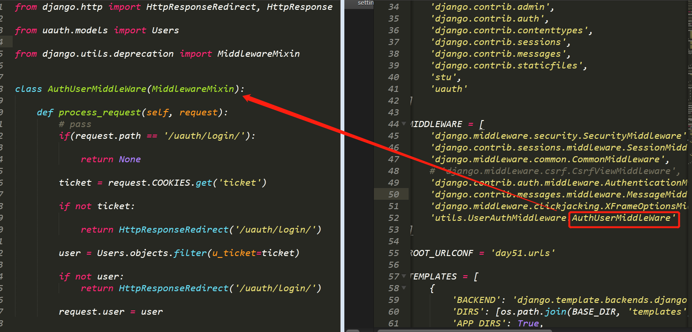

Django – 分页、中间件、验证码、文件上传
中间件Middleware
中间件：
a) 是一个轻量级的，底层的插件，可以介入Django的请求和响应的过程（面向切面编程)
b) 中间件的本质就是一个python类
c) 面向切面编程(Aspect Oriented Programming)简称AOP，AOP的主要实现目的是针对业务处理过程中的切面进行提取，它所面对的是处理过程中的某个步骤或阶段，以获取逻辑过程中各部分之间低耦合的隔离效果
中间件的处理函数
1 | __init__：没有参数，在服务器响应的第一个请求的时候自动调用，用户确定时候启动该中间件 |
处理流程
自定义中间件
在工程目录下创建middleware目录
目录中创建一个python文件
在根据功能需求，创建切入需求类，重写切入点方法
编写代码：
1
2
3
4
5from django.utils.deprecation import MiddlewareMixin
class AuthUserMiddleWare(MiddlewareMixin):
def process_request(self, request):
print(‘xxxx’)启动中间件，在settings中进行配置，MIDDLEWARE中添加middleware.文件名.类名

分页
分页库Paginator的基本语法
django提供了分页的工具，存在于django.core中
1 | Paginator： 数据分页工具 |
Paginator：
1 | 对象创建： Paginator(数据集，每一页数据的条数) |
属性：
1 | count 计算和 |
方法：
1 | page(页码)：获取的一个page对象，页码不存在则抛出invalidPage的异常 |
常见错误：1
2
3invalidPage：page()传递无效页码
PageNotAnInteger：Page()传递的不是整数
Empty:page()传递的值有效，但是没有数据
page对象
page：
1 | 对象获取，通过Paginator的page()方法获得 |
属性：
1 | object_list: 当前页面上所有的数据对象 |
方法：1
2
3
4
5
6has_next() 判断是否有下一页
has_previous(): 判断是否有上一页
has_other_pages(): 判断是否有上一页或下一页
next_page_number(); 返回下一页的页码
previous_page_number(): 返回上一页的页码
len(): 返回当前也的数据的个数
Paginator对象和Page对象的关系
如下有学生表，学生表中有25条数据，通过分页，每一个6条数据，去实现分页的功能:
代码：
验证码
在用户登录，注册以及一些敏感操作的时候，我们为了防止服务器被暴力请求，或爬虫爬取，我们可以使用验证码进行过滤，减轻服务器的压力。
验证码需要使用绘图Pillow
1 | Pip install Pillow |
核心：
1 | image.ImageDraw.ImageFont |
绘制流程：
1 | background = (10,20,30) RGB颜色 |
文件上传
以上传图片为例，同样也需要安装Pillow库。
在Model中定义保存图片的字段
1 | class Student(models.Model): |
注意：在指定字段为ImageField类型的时候，要指定upload_to参数，表示上传的图片的保存路径。
配置上传图片的保存路径
先在根目录下创建media目录。
在工程目录下的settings.py中配置media_url和media_root路径。
1 | MEDIA_URL = '/media/' |
在工程目录下的urls.py文件中配置media的目录为静态目录。
1 | from django.conf.urls import url |
实现保存图片
注意：上传的时候，需要指定form表单的enctype=‘multipart/form-data’
页面中解析上传的图片信息
在数据库中用于保存图片的字段s_content的字段中存的是media下的upload/xxx.jpg地址，所以在页面解析的时候，需要加上media的目录，这样才能解析到图片在服务器中的路径。

![微信分享二维码]()